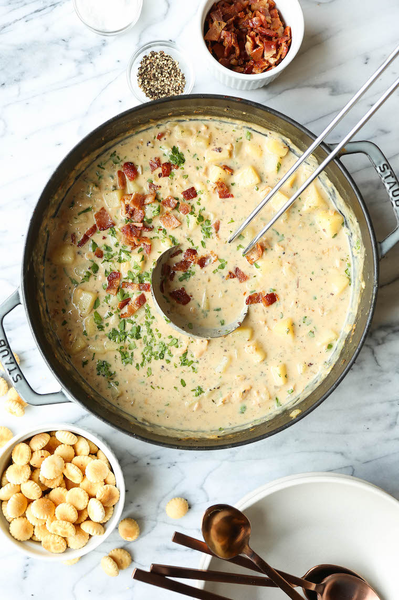

Clam Chowder

Description
Clam chowder is any of several chowder soups in American cuisine containing
clams. In addition to clams, common ingredients include diced potatoes, salt
pork, and onions.
Ingredients:
- 6 strips thick cut bacon
- 2 tbsp butter
- 1 medium yellow onion
- 2 ribs celery
- 3 cloves garlic
- 1 tbsp hot sauce
- 1 tsp Worcestershire sauce
- 1/3 cup flour
- 3 cups Half and Half
- 8 oz. clam juice
- 1 chicken bouillon cube
- 1 bay leaf
- 1 1/4 lbs. potatoes
- 3 chopped clams
- Fresh parsley & freshly cracked black pepper
Steps:
-
Cook the bacon over low heat. Once the bacon is cooked, set aside
on a paper towel lined plate. Chop once cooled. Reserve 2 tbsp of
bacon drippings.
-
Add the reserved bacon drippings and butter to the pot over medium
heat. Add the diced onions and celery. Toss to coat and soften for
5-6 mins. Add the garlic, hot sauce, Worcestershire sauce, and
seasonings. Cook for 1 min.
-
Add the flour and cook for 2 mins stirring continuously.
-
Add the chicken broth in small splashes, stirring continuously. Add
the half and half.
-
Stir in the chicken bouillon and add the bay leaf. Add the juice from the
canned clams to the soup. Stir in the additional clam juice.
-
Bring the soup to a gentle boil, then reduce to a simmer. Simmer for 20
mins, partially covered. Stir occasionally.
-
Peel and dice the potatoes and add them to the soup. Bring back to a gentle
bubble and let the potatoes cook for 20-25 mins, until fork tender. Reduce
heat to low.
-
Stir in the clams and let them heat through, about 5 mins. Remove bay leaf.
-
Serve and garnish with parsley, black pepper, and chopped bacon.